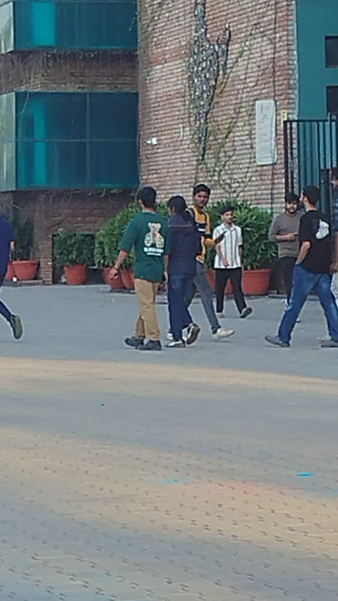

About FitTrack
Built to feel simple, not demanding
I built FitTrack to make staying active feel simple and stress-free. It started as a small project for tracking steps, but it slowly became a place for the everyday habits I actually want to keep up with.
Why I built this
Most fitness apps try to do too much. I wanted something lighter, friendlier, and easier to come back to when life gets busy. FitTrack is meant to help you notice the small wins without making the whole thing feel like a chore.
How to use it
- Open FitTrack on your phone
- Allow motion permissions when asked
- Start walking and let it do the rest